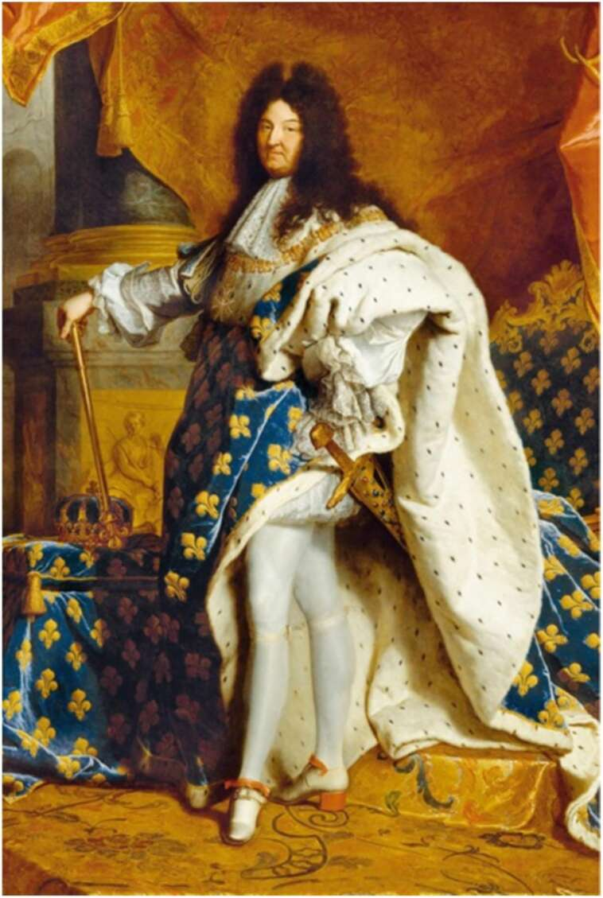

22. Eighteenth-century masculinity: an official portrait of King Louis XIV of France. Note the long wig, stockings, high-heeled shoes, dancers posture — and huge sword. In contemporary Europe, all these (except for the sword) would be considered marks of effeminacy. But in his time Louis was a European paragon of manhood and virility.
